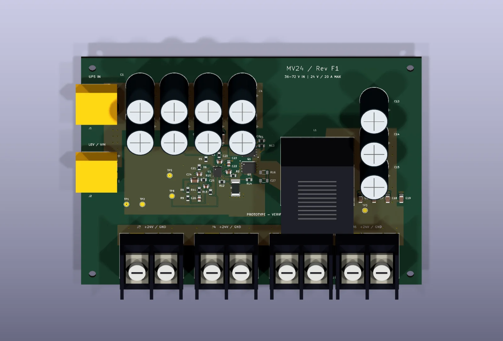
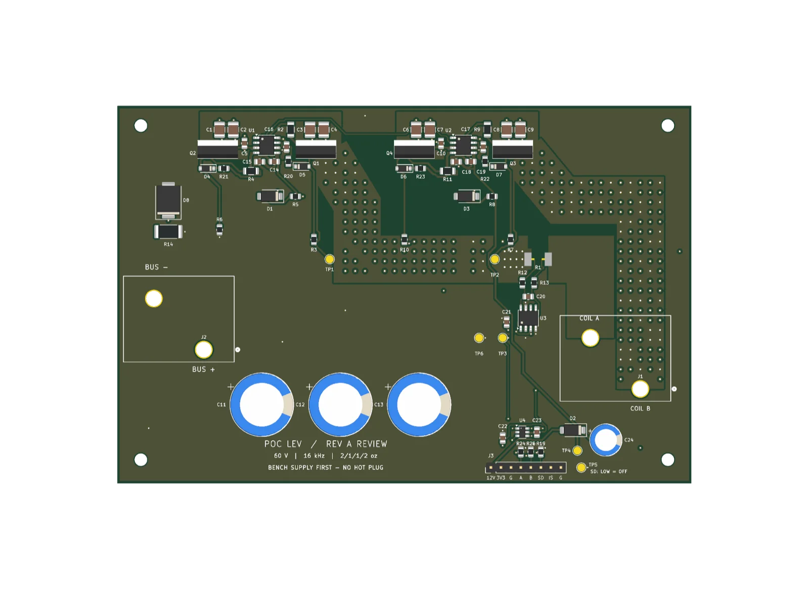
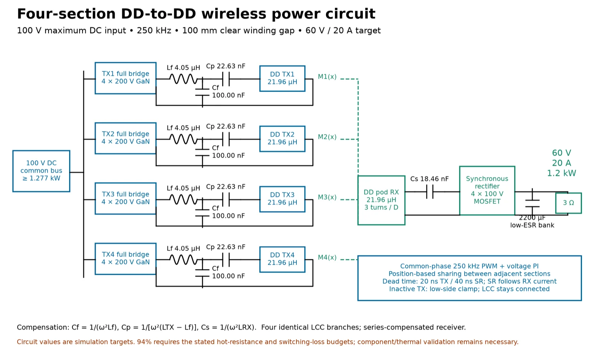
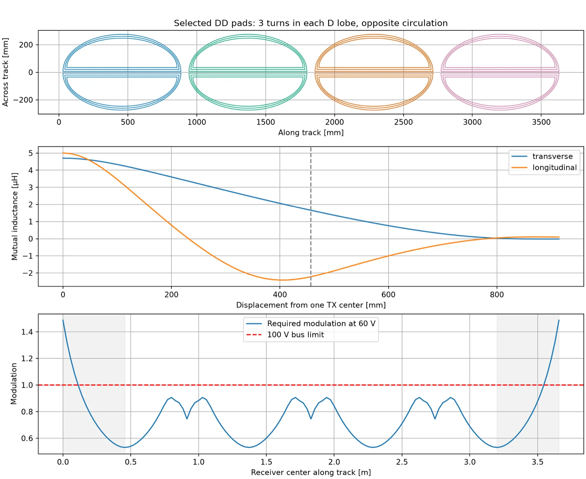

Guadaloop, Power Electronics Team
Jan 2026 – PresentDesigning and assembling the power boards, inverter and shielding for a pod's electrical system. Details and renders are in the project above.
Electrical and computer engineering, UT Austin. Power electronics, PCB design, embedded firmware and software tools.
Looking for Summer 2027 internships in hardware, embedded, robotics and software.


Voltage and current figures are design targets. The published packages are design and review material; no measured hardware performance is claimed. This is team work, not sole authorship.
Prototype design. Firmware, model and static PCB checks do not establish USB enumeration, HDMI interoperability, signal integrity or physical operating limits; the board has not been qualified on assembled hardware. Current published revision A2 (September 2026) uses external regulated 12 V power. The USB-C connectors carry USB 2.0 data only.
The current model is a four-section double-D (DD) track, 12 ft × 2 ft, at 250 kHz across a 100 mm winding gap, with four LCC primary branches and a series-compensated receiver. The target is 60 V and 20 A (1.2 kW) from a maximum 100 V DC input.


Results are simulations and calculations. Circuit values are simulation targets; component and thermal validation and hardware testing remain to be done.
Fabrication submission and physical silicon validation are still outstanding.
No projects match this filter.
Designing and assembling the power boards, inverter and shielding for a pod's electrical system. Details and renders are in the project above.
B.S. in Electrical and Computer Engineering.
Coursework: Circuit Theory, Digital Logic Design, Computer Architecture, Embedded Systems, Data Structures and Algorithms, Operating Systems, Software Design and Implementation I and II.
Resume (PDF): Hardware engineering Software engineering